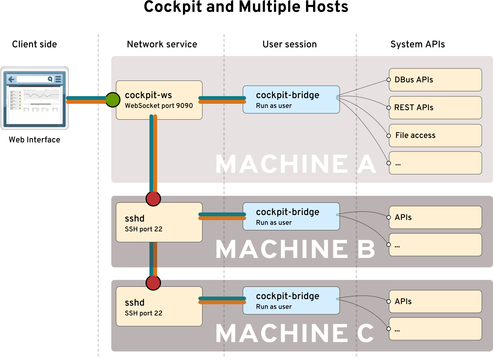
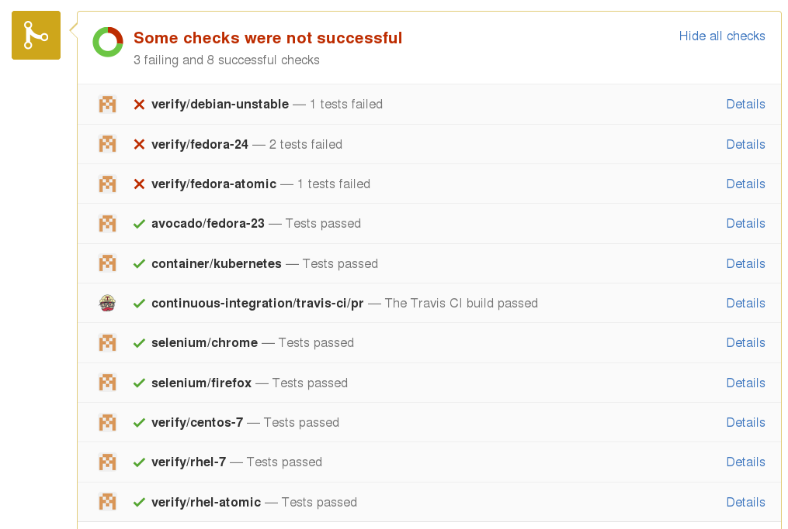

Integrating a Modular System
How Cockpit does it
Dominik Perpeet
Our protagonist

Intermission: Demo

Look, I can log in!
Cockpit is a
remote interactive
Linux admin interface
Cockpit calls
System APIs directly

Our supporting cast:
| Atomic |
atomicapp |
DBus |
| Docker |
docker-storage |
GLib |
| journal |
Kubernetes |
libssh |
| libvirt |
LVM |
NetworkManager |
| Openshift |
ostree |
passwd |
| PCP |
polkit |
react |
| realmd |
sosreport |
setroubleshoot |
| setenforce |
ssh-agent |
sssd |
| storaged |
subscription-man |
sudo |
| systemd |
shadow-utils |
timedated |
| tuned |
udev |
udisks |
| /proc and /sys |
... |
Intermission: DBus demo

What drives Cockpit?
Open Source, Agile
Let's bring it all together
What could possibly go wrong?!
Cockpit project
lives and dies
by its testing
10,000 testing
instances a day

Continuous Integration

Test virtual machines
can run in
Docker containers
Intermission: Demo testing
Distributed is key
Distributed scales
Distributed makes
Open Source work
The Framework is not King
The Feedback Loop is King
Red Hat QE Testing Upstream
Different tests for different software?
The real magic of continous integration
happens before you merge
"Release Early. Release Often.
And listen to your customers."
- - Cathedral and the Bazaar
" Deliver working software frequently, from a
couple of weeks to a couple of months, with a
preference to the shorter timescale. "
-- Agile Manifesto
Delivering every N months
is not often enough
Conclusion
Open Source is
distributed
Open Source
development
is distributed
Open Source
communication
is distributed
Open Source
integration testing
should be distributed
Open Source
packaging and delivery
should be distributed
Code Upstream
Discussion Upstream
Review Upstream
Integration Testing Upstream
Packaging Upstream
Delivery Upstream
Open Source = Upstream
Questions?
cockpit-project.org
#cockpit on Freenode
github.com/cockpit-project/cockpit